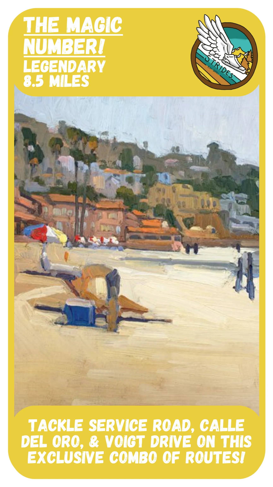
Service Road, Calle del Oro, and Voigt Drive: three glorious hills in one run! This magical route is a gateway into running Legendaries with Strides, and we often do it Fall quarter.
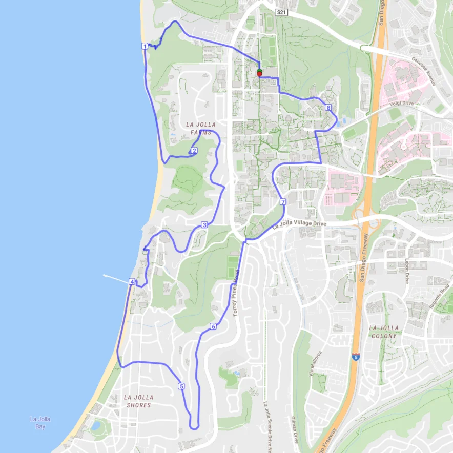
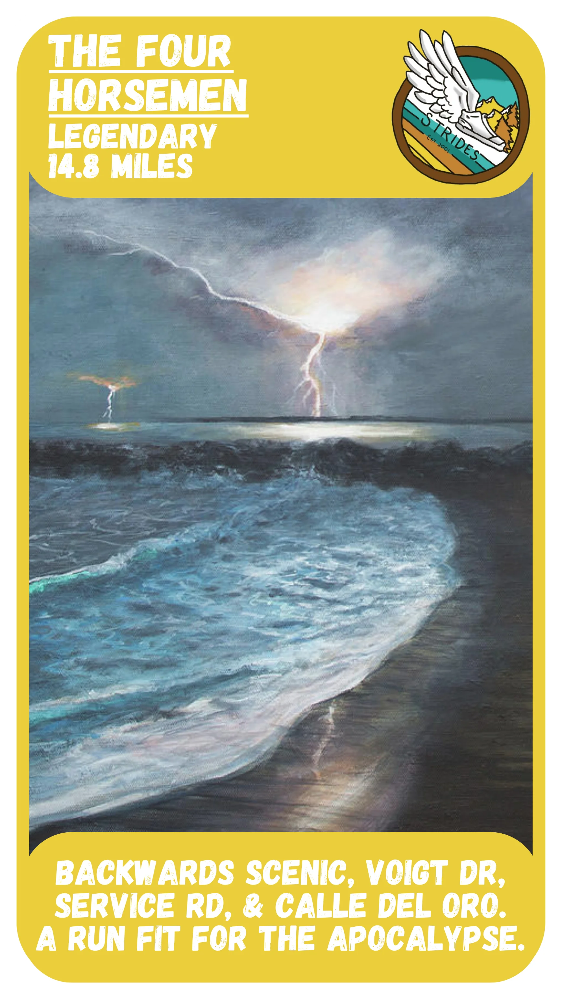
Backwards Scenic, Voigt Drive, Service Road, and Calle del Oro – four of the worst hills in Strides’ route circulation – all on the same route. Thunder and lightning are a bonus for added adventure.
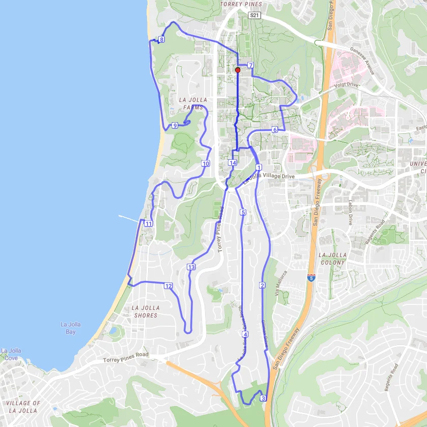
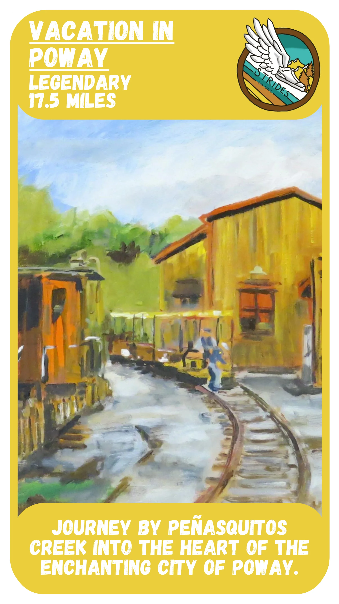
The greatest trail run in our route collection! Follow this extension of Waterfall all the way to the heart of the quaint city of Poway. Lodging and transportation back to UCSD not included.
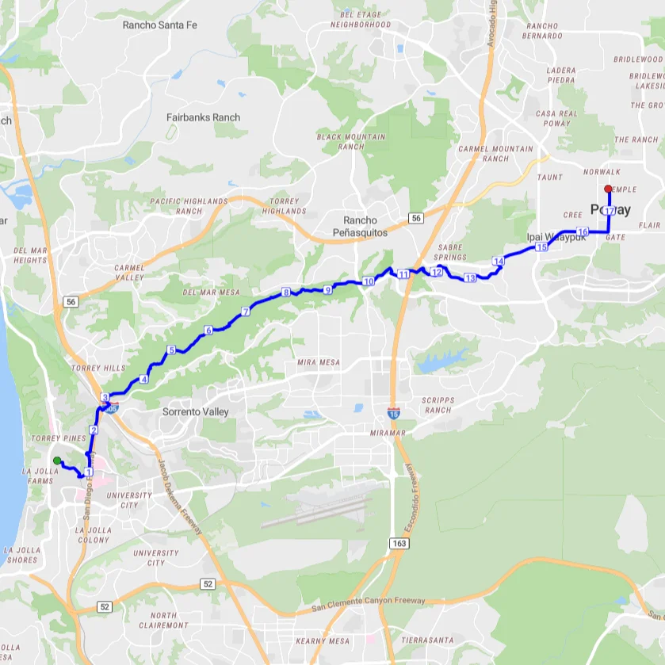
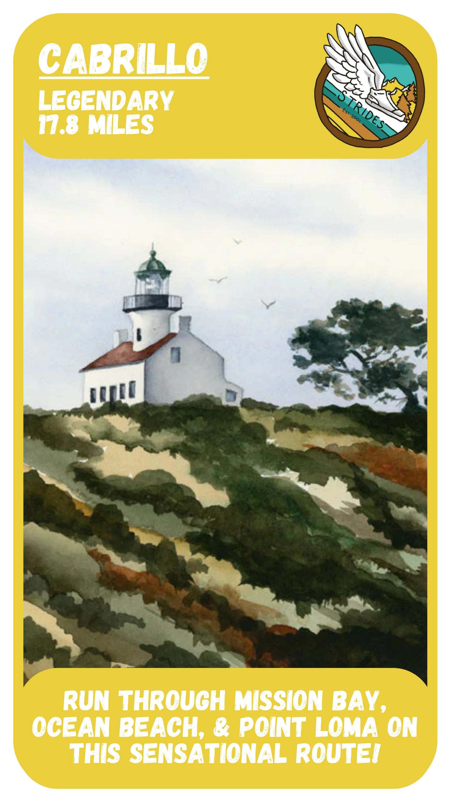
Run along Mission Bay, through Ocean Beach, on Sunset Cliffs, around Point Loma, and all the way to Cabrillo National Monument! Tour some of San Diego’s best attractions on this amazing run.
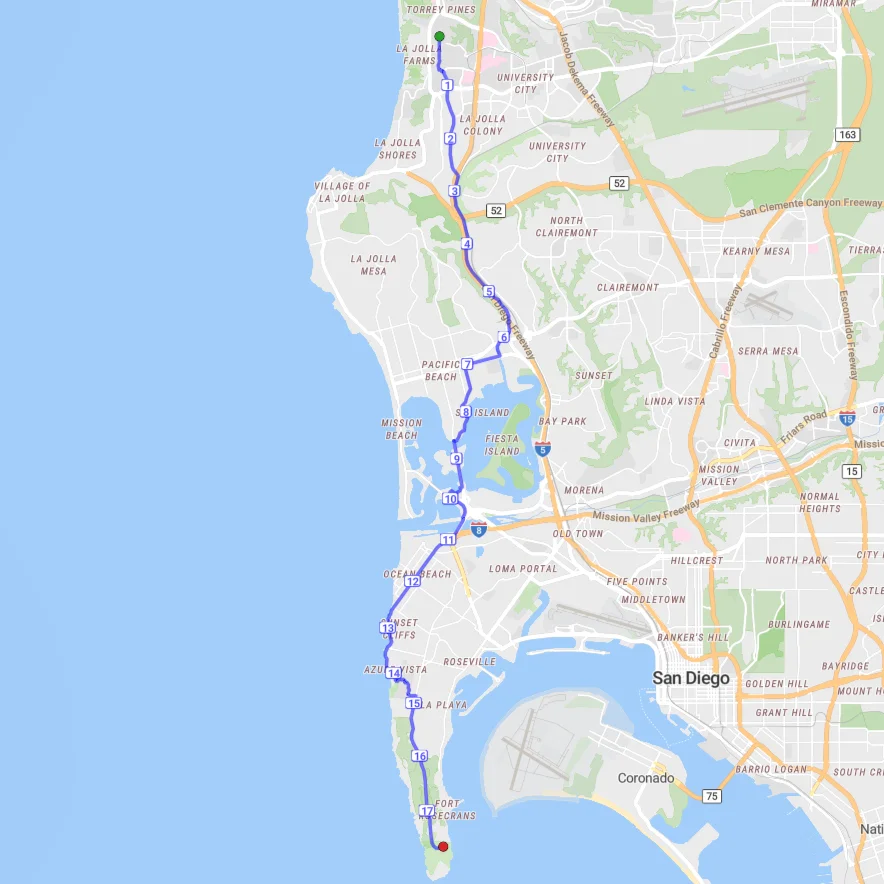
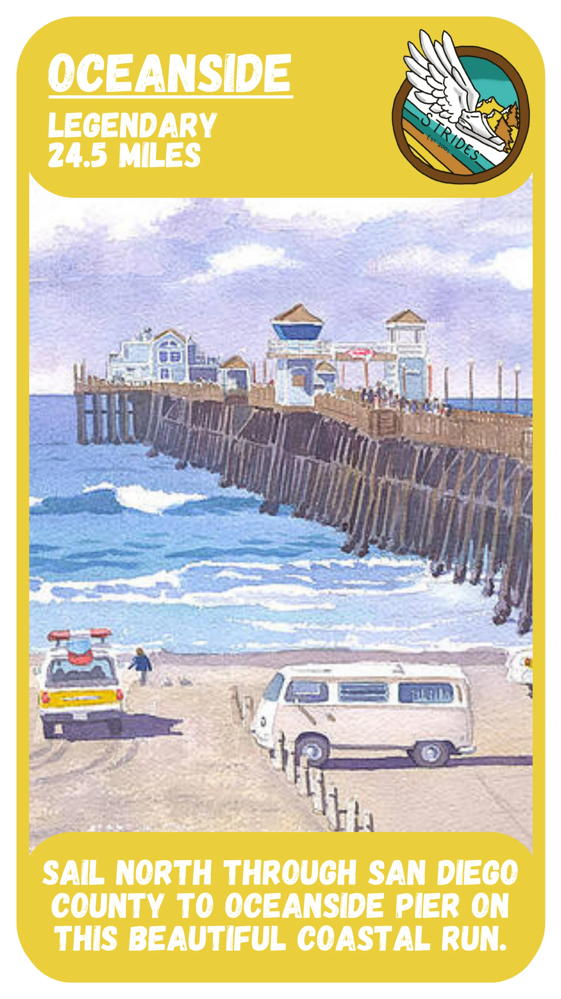
The yin to the Border Run’s yang. This run is a coastal journey you’ll never forget, with photo opportunities galore. Enjoy the beautiful views, then end the route by running on Oceanside Pier!
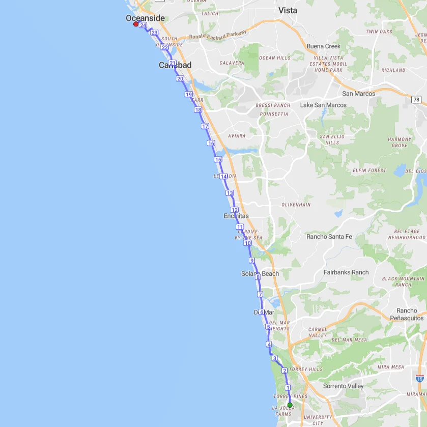
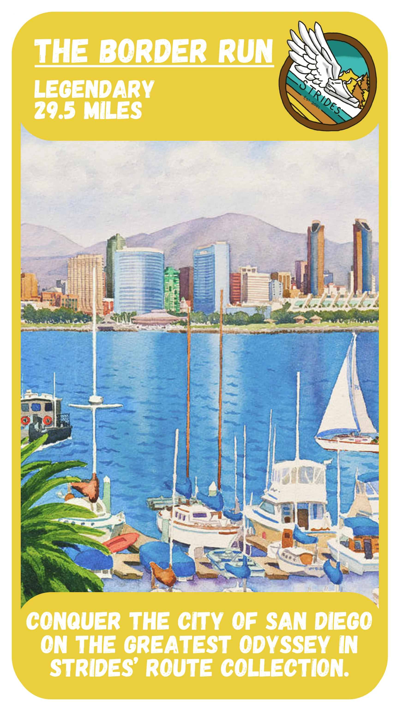
For existential crises only. Or with friends (the current group record is 21 people). Either way, this route is the holy grail, and you’ll remember this run for a lifetime. Take the trolley back!
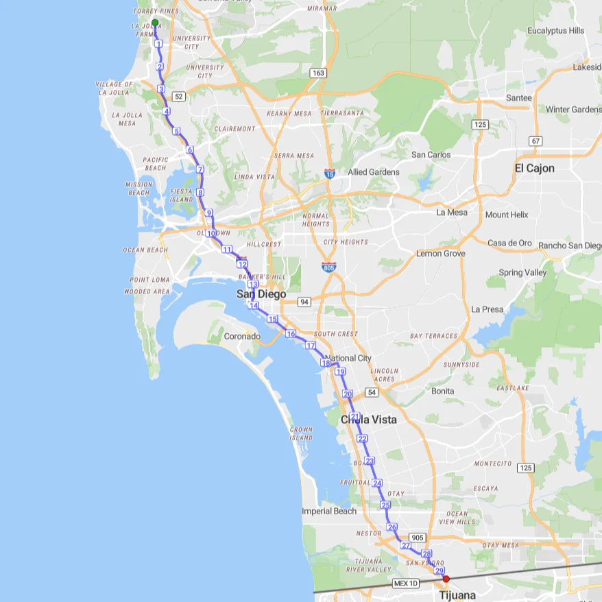